Introduccion¶
En el transcurso de este documento aprenderemos a utilizar la funciones basicas de intellij, el IDE (Interface Developer Enviroment) de Jetbrains enfocado en la programacion con Java.
Instalacion¶
Para hacernos con el instalador de esta aplicacion, debemos ir a la pagina oficial de Jetbrains donde encontraremos las diferentes versiones de Intellij que són:
- Ultimate (de pago)
- Community (gratuita)
Aqui os dejo las caracteristicas que las diferencian.
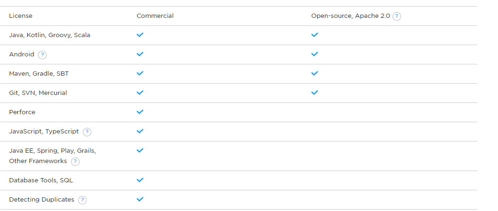{kind=link}
Una vez has elegido la version que mas se adapta a tus necesidades empzamos con la instalación, siendo el primer paso hace doble clic en el archivo que nos hemos descargado.
Primero elegimos el directorio donde queremos instalar Intellij.
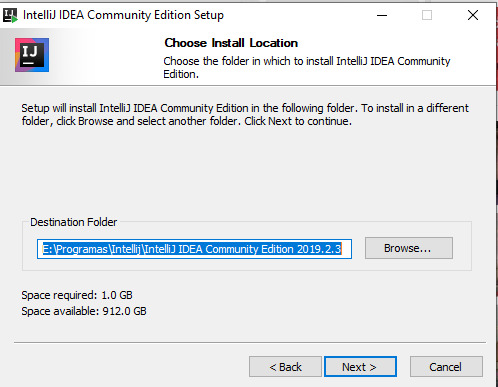{kind=link}
Elegimos las caracteristicas que creamos necesarias para nuestro caso.
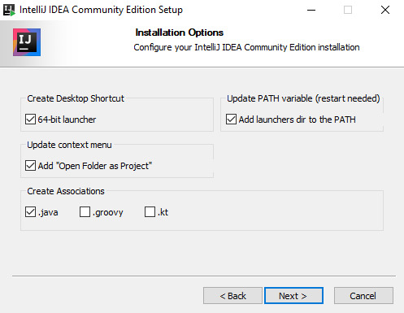{kind=link}
Aceptamos terminos y condiciones de uso.
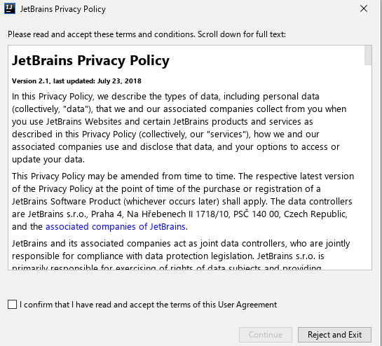{kind=link}
Elegimos el tema del visionado de la aplicacion.
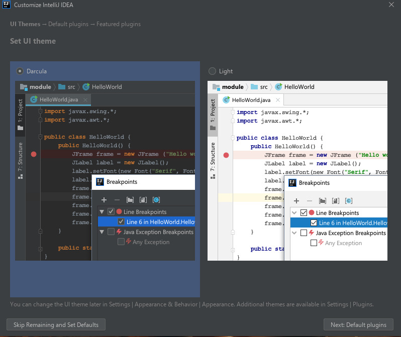{kind=link}
Seguidamente se te ofrece la posibilidad de añadir unos Plugins que intellij considera que son de uso habitual en la comunidad.
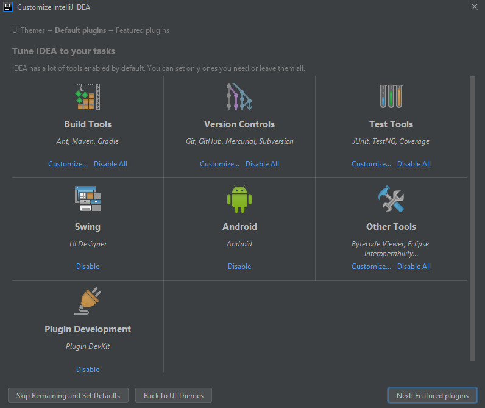 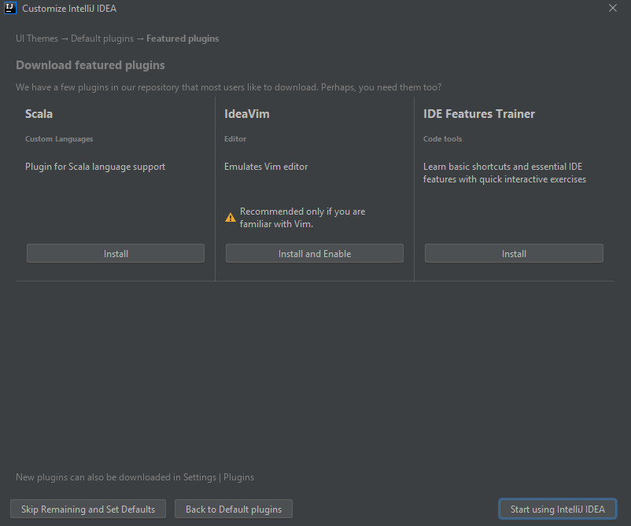{kind=link}
{kind=link}
Creacion de un proyecto¶
Una vez abierto Intellij veremos que nos da la opcion de “Create New Project”.
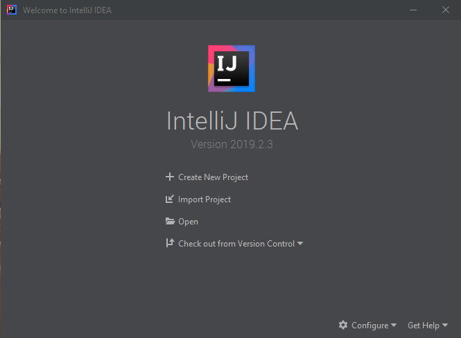{kind=link}
Elegimos el nombre del proyecto.
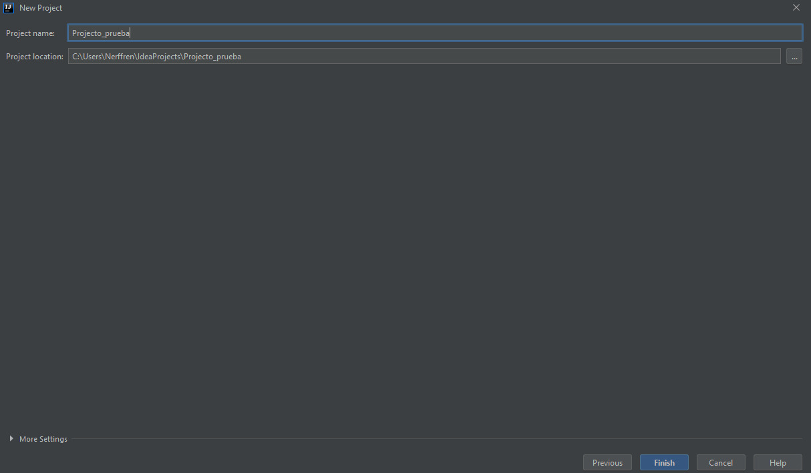{kind=link}
Elegimos la version de Java que utilizaremos.
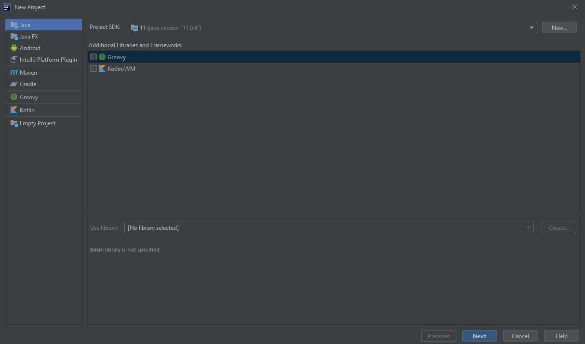{kind=link}
Creamos las clases necesarias para el proyecto.
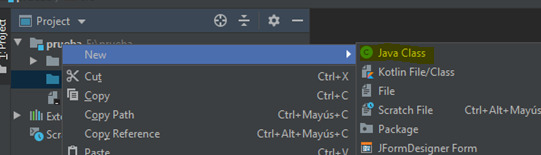{kind=link}
Introducimos el codigo que printera el clasico “Hola Mundo”
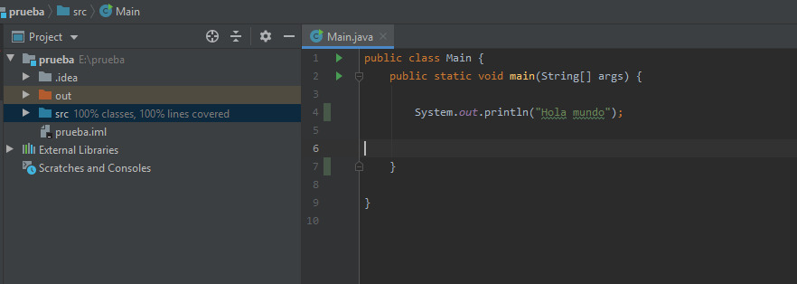{kind=link}
Arriba a la derecha veremos el modo Run y el modo debbug.

En el caso del modo Run nos ejecutara el programa de modo normal en el caso de que no haya ningún error.
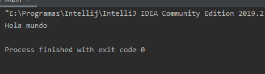{kind=link}
En el caso del modo debbug nos ejecutara el programa avisandonos de los posibles bugs que contenga.
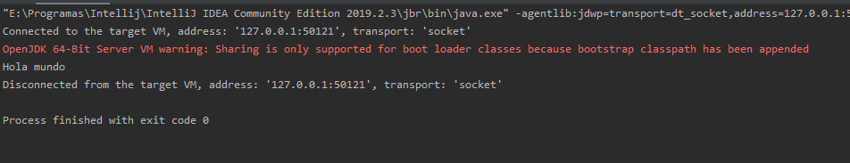{kind=link}
Ampliacion del IDE¶
En nuestro caso instalaremos el plugin Rainglow Color Schemes, que nos permitira tener mas variaciones de color predefinidas para nuestro IDE.
Si apretamos Ctrl+Alt+S entraremos en Settings donde en la pestaña de plugins podremos utilizar la barra buscadora para encontrar el plugin deseado, despues de instalarlo nos hara reiniciar el IDE para poder utilizarlo
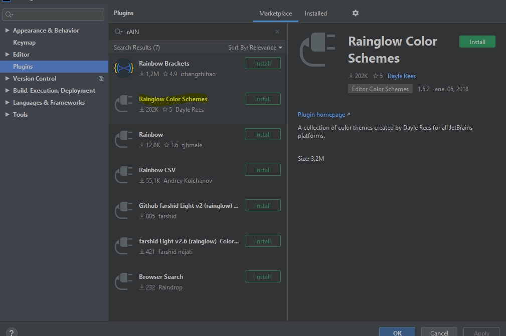{kind=link}
Ahora volveremos a entrar a Settigs y veremos el aprtado del nuevo plugin que nos permitira cambiar la gama de colores predefinidos por otra.
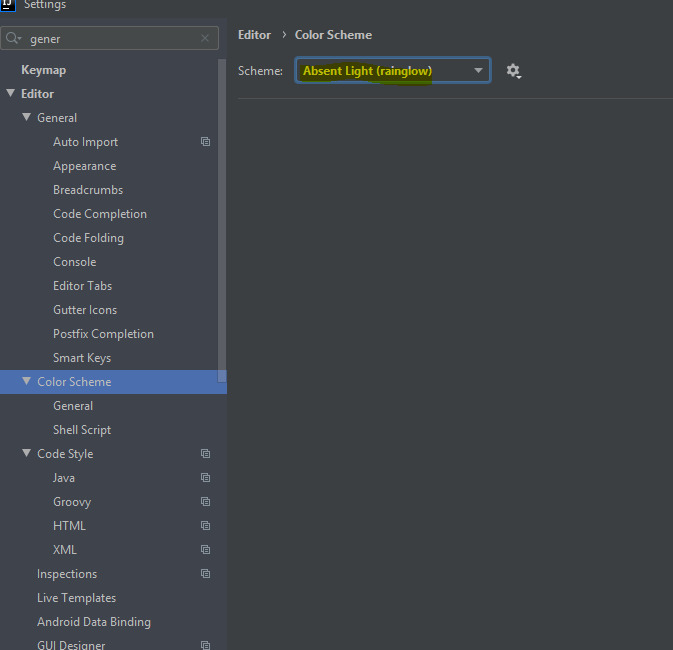{kind=link}
Interficies Grafiques¶
Para instalar interficies grafiques debemos instalarlas a traves de plugins, en este caso utilizaremos el plugin JFormDesigner para crear formularios.
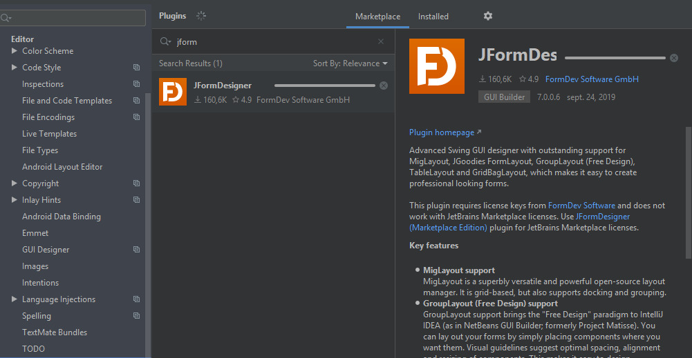{kind=link}
Creamos el nuevo formulario de la misma forma que creamos las clases
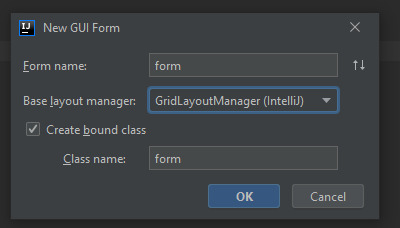{kind=link}
Aqui vemos la ventana que nos proporciona el IDE a partir del plugin para crear interficies graficas.
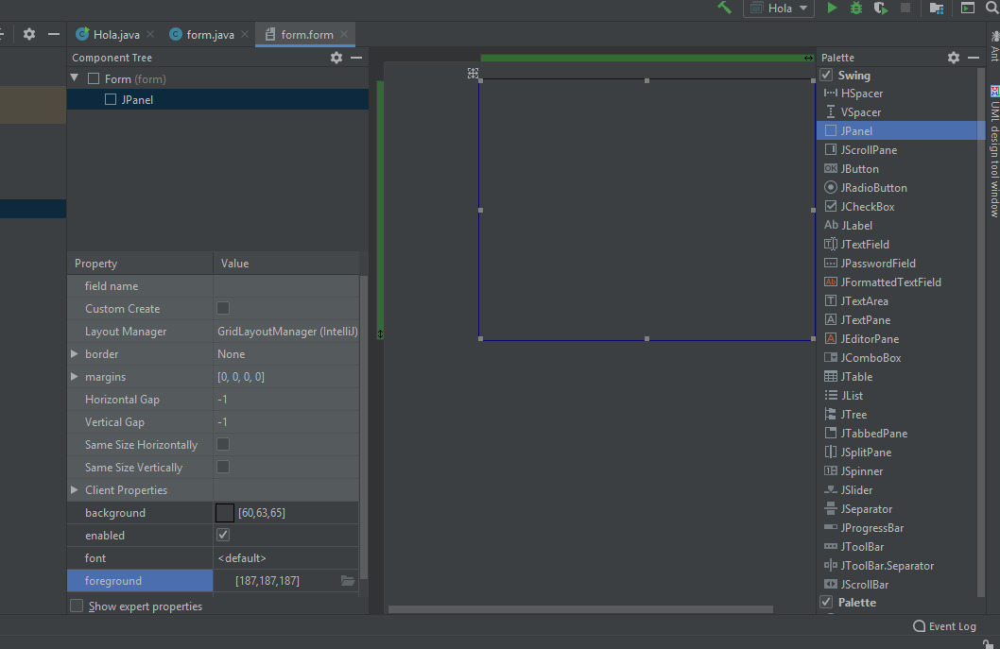{kind=link}